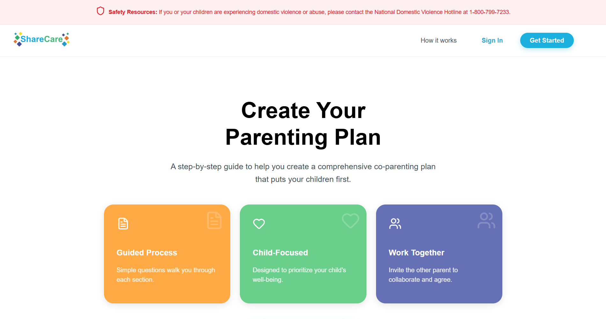
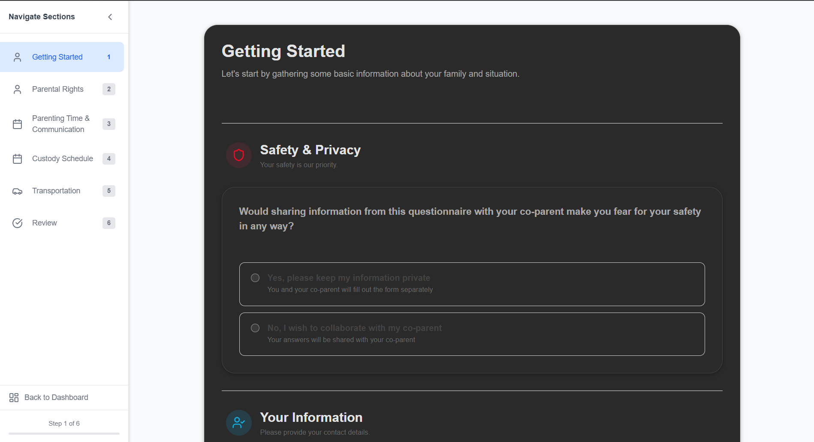
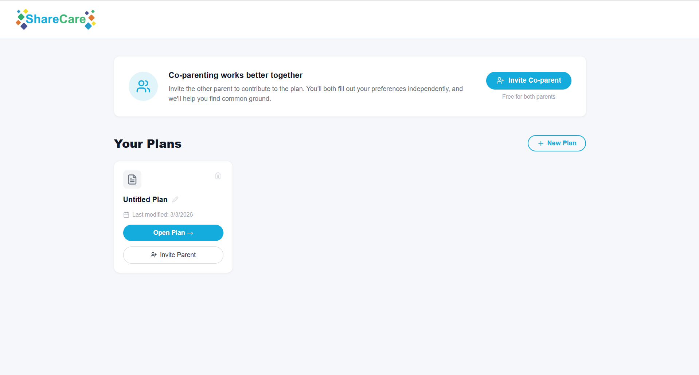
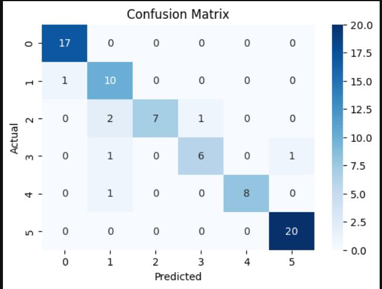
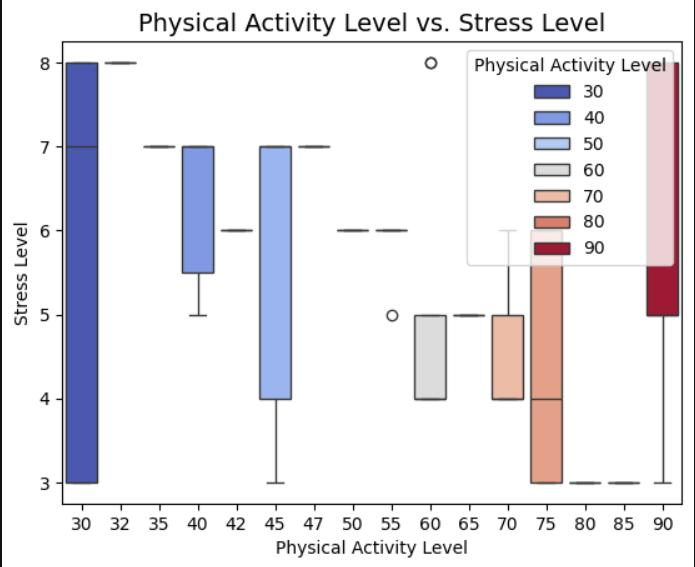

Node.jsMongoDBFirebaseREST APIs
A specialized backend system designed to modernize questionnaire intake for a major nonprofit. I replaced fragmented manual processes with a centralized data pipeline, enabling secure client data collection and structured reporting.



PythonDockerCLItmux
Infrastructure automation for developers. LazyAgent orchestrates isolated, containerized environments through a command-line interface. It utilizes persistent SSH and tmux sessions to ensure that automated agents can continue long-running tasks even when the developer disconnects.
Machine LearningData PipelinesBackend
Built for Hack OHI/O, SeatSense uses predictive modeling to estimate study space occupancy across campus. By analyzing usage patterns, the system helps students find productive environments in real-time.
PythonScikit-LearnData Analysis
Exploration of ML techniques on complex healthcare datasets. This project focuses on the rigorous preparation of sensitive data and the evaluation of statistical models to identify risk factors and predictive trends.


IBM SkillsBuild x OSU Hackathon
A unified platform concept for academic planning. BuckeyeBoard aggregates information from disconnected university systems into a single AI-assisted dashboard, helping students prioritize tasks and track deadlines.